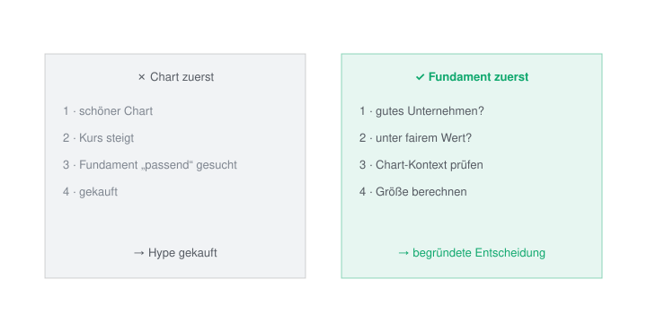
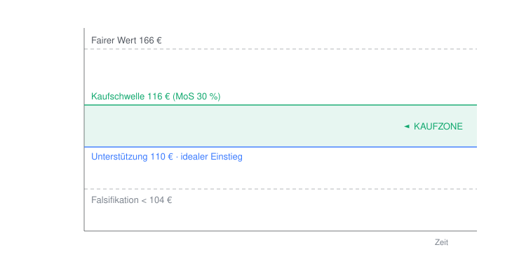
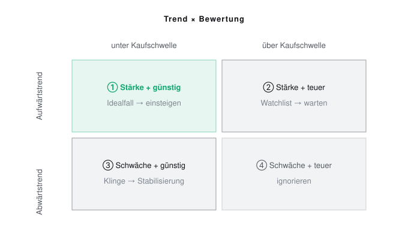
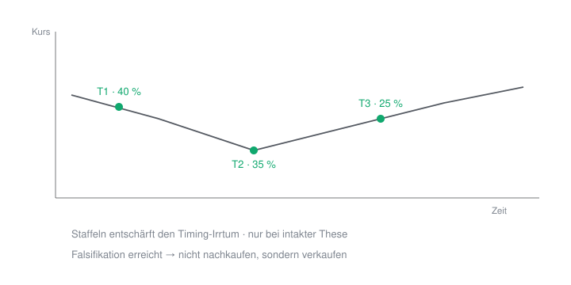

Wo dieses Modul steht
Bis hierher hast du drei getrennte Fähigkeiten gelernt:
Modul 2 (Fundament) → WAS & OB: gutes Unternehmen, unter fairem Wert? Modul 3 (Chart) → WANN: günstiger Kontext, keine fallende Klinge? Modul 5 (Risiko) → WIE VIEL: Positionsgröße aus Risikobudget
Modul 4 fügt sie zu einer einzigen Entscheidung zusammen. Es enthält fast keine neue Theorie — es ist der Ort, an dem die vorhandene Theorie zu einem wiederholbaren Ablauf wird. Genau diese Verbindung ist der Kern eines regelbasierten Systems und die Vorbereitung auf Modul 8.
Lernziele
Nach diesem Modul kannst du:
- die Reihenfolge der Prüfung einhalten — Fundament zuerst, Chart zuletzt — und erklären, warum die umgekehrte Reihenfolge ruiniert;
- eine Kaufzone aus Fair Value, Sicherheitsmarge und Chart-Marken konkret bestimmen;
- starke von schwachen Trends unterscheiden und beurteilen, ob du in Stärke oder in Schwäche kaufst;
- eine Überbewertung erkennen und der Versuchung widerstehen, ein gutes Unternehmen zu jedem Preis zu kaufen;
- die vier Einstiegssituationen unterscheiden und für jede den passenden Plan wählen;
- gestaffeltes Einsteigen (Tranchen) einsetzen, um den Timing-Irrtum zu entschärfen;
- entscheiden, wann Warten die bessere Entscheidung ist — und Warten als aktive Wahl behandeln;
- den vollständigen Einstiegsplan in einem Dokument festhalten, das zugleich dein Falsifikationskriterium enthält.
4.1Die eiserne Reihenfolge
Warum die Reihenfolge über Erfolg entscheidet
Es gibt zwei Wege, Fundament und Chart zu verbinden. Nur einer funktioniert.

Der Chart hat in diesem System kein Kaufveto nach oben. Ein schöner Chart macht ein schlechtes oder überteuertes Unternehmen nicht kaufbar. Der Chart darf nur zwei Dinge: den Einstieg eines bereits fundamental freigegebenen Unternehmens verfeinern oder ihn verzögern.
Merksatz 1Wer beim Chart anfängt, sucht anschließend Fundamentaldaten, die zum Chart passen. Das ist kein Research, das ist Selbstüberredung.
Der Filter in einem Satz
Kaufe ein hervorragendes Unternehmen deutlich unter seinem fairen Wert, in einem Chart-Kontext, der nicht gegen dich läuft, in einer Größe, die deinen schlimmsten Fall überlebt.
Jeder Halbsatz gehört zu einem Modul. Fehlt einer, ist es kein Kauf.
4.2Die Kaufzone bestimmen
Ein Einstieg ist kein Punkt, sondern eine Zone. Sie entsteht aus der Überlagerung von Fundament und Chart.
Schritt 1 — Die fundamentale Kaufzone (aus Modul 2)
Fairer Wert (Komposit): 166 € Geforderte Sicherheitsmarge: 30 % (Qualitätsunternehmen) ──────────────────────────────────────── Fundamentale Kaufschwelle: 166 × (1 − 0,30) = 116 € → Unter 116 € ist die Sicherheitsmarge ausreichend.
Das ist die Obergrenze deiner Kaufzone: Über 116 € kaufst du nicht, egal wie schön der Chart ist.
Die 30 % sind ein Beispiel, kein Gesetz. Die geforderte Sicherheitsmarge ist kein fester Wert, sondern hängt davon ab, wie sicher du dir bei deiner Bewertung bist — sie ist der Puffer für deinen möglichen Irrtum (Modul 2). Daraus folgt eine wichtige Differenzierung:
- Bei einem hochberechenbaren Unternehmen — stabile Cashflows, breiter Burggraben, wenig Überraschungspotenzial — ist deine Wertschätzung verlässlicher. Hier können schon 10–15 % Marge ausreichen. Solche Gelegenheiten entstehen mehrmals pro Jahrzehnt: bei jeder Marktkorrektur, jeder überzogenen Reaktion auf eine Quartalszahl.
- Die 30 % (oder mehr) hebst du dir für Unternehmen mit größerer Unsicherheit auf — zyklisch, schwerer prognostizierbar, dünnerer Burggraben. Dort brauchst du den größeren Puffer.
Der häufige Einwand „ein Weltklasse-Unternehmen fällt doch nie 30 %" ist deshalb berechtigt — aber er verwechselt den Beispielwert mit der Regel. Bei einem Weltklasse-Unternehmen forderst du eben nicht 30 %, sondern weniger. Du wartest nicht auf das Unmögliche, sondern kalibrierst deine Marge an der Verlässlichkeit deiner eigenen Bewertung.
Und Warten heißt nicht, dass Kapital untätig danebenliegt. Du beobachtest nicht eine einzige Aktie, sondern eine ganze Watchlist (Abschnitt 4.7): Während der eine Titel über seiner Schwelle steht, fällt oft gerade ein anderer in seine Kaufzone. Und Cash ist selbst eine Position (Modul 5) — bewusst gehaltene Feuerkraft, kein Versäumnis. Ein Anleger mit gut gefüllter Watchlist sitzt selten lange komplett unbeschäftigt.
Schritt 2 — Die charttechnische Feinjustierung (aus Modul 3)
Innerhalb der fundamental erlaubten Zone (≤ 116 €) suchst du Chart-Marken, die einen günstigen Einstieg und ein objektives Falsifikationsniveau bieten:
Nächste starke Unterstützung: 110 € (3× getestet, hohes Volumen, Konfluenz mit 200-Tage-Linie) → idealer Einstiegsbereich: 110–114 € → Falsifikationsniveau (Chart): unter 104 € (klarer Bruch der Unterstützung)
Schritt 3 — Die Zonen überlagern

Die Kaufzone ist der Schnitt aus „fundamental günstig genug" und „chart-technisch sinnvoll". Liegt die nächste Unterstützung über der Kaufschwelle, gibt es keine Zone — dann heißt es warten (4.6).
Das mitgelieferte CRV
Diese Konstruktion liefert das Chance-Risiko-Verhältnis (Modul 5) automatisch mit:
Einstieg: 112 € Ziel (Fair Value): 166 € → Gewinn 54 € (+48 %) Falsifikation: 104 € → Verlust 8 € (−7 %) CRV = 54 / 8 ≈ 6,8 : 1
Ein so günstiges CRV entsteht nur, wenn Kauf nahe an einer Unterstützung und tief unter dem Fair Value zusammenfallen. Das ist der ganze Sinn der Zonen-Überlagerung.
Merksatz 2Der beste Einstieg liegt dort, wo der große Abstand zum fairen Wert auf das nahe Falsifikationsniveau trifft. Dort ist das Chance-Risiko-Verhältnis von selbst am besten.
4.3Starke Trends erkennen — kaufst du Stärke oder Schwäche?
Ein fundamental freigegebenes Unternehmen kann sich in sehr unterschiedlichen Chart-Situationen befinden. Zwei grundverschiedene Philosophien treffen hier aufeinander:
| Kauf in Schwäche (antizyklisch) | Kauf in Stärke (Trendfolge) | |
|---|---|---|
| Prinzip | Kaufe, wenn der Kurs gefallen ist | Kaufe, wenn der Aufwärtstrend bestätigt ist |
| Chart-Lage | nahe Unterstützung, evtl. unter 200-Tage | über steigender 200-Tage-Linie |
| Vorteil | bessere Sicherheitsmarge, besseres CRV | geringeres Risiko „fallender Klingen" |
| Gefahr | fallende Klinge (Modul 3) | schlechtere Sicherheitsmarge |
| Passt zu | tiefer Unterbewertung + intakter These | Qualität, die selten wirklich billig wird |
Der Value-orientierte Grundansatz dieses Kurses neigt zum Kauf in Schwäche — aber mit dem Chart-Filter aus Modul 3 als Schutz gegen die fallende Klinge.
Die Auflösung: „Schwäche mit Stabilisierung"
Der beste Kompromiss ist nicht, ins fallende Messer zu greifen, sondern auf die erste Stabilisierung in der Kaufzone zu warten:
Kurs fällt in die Kaufzone …
│
▼
Warte auf mindestens eines dieser Stabilisierungssignale:
✓ erstes höheres Tief nach dem Fall
✓ Unterstützung hält bei hohem Volumen (Käufer treten auf)
✓ Volumen auf der Verkäuferseite trocknet aus
✓ Umkehr-Candlestick an der Unterstützung (Modul 3) MIT Volumen
│
▼
Erst dann Einstieg (ggf. Tranche 1)
So verbindest du die bessere Bewertung des antizyklischen Kaufs mit dem Schutz der Trendfolge: Du kaufst tief, aber erst, wenn der Fall zur Ruhe kommt.
Was ein starker Aufwärtstrend ist (Wiederholung Modul 3)
- Höhere Hochs und höhere Tiefs
- Kurs über steigender 200-Tage-Linie
- Rücksetzer werden von Volumen aufgefangen
- Keine Volumen-Divergenz an neuen Hochs
Ein starker Trend ist kein Kaufhindernis — aber er darf die Sicherheitsmarge nicht auffressen. Ein Qualitätsunternehmen, das nie unter den fairen Wert fällt, gehört auf die Watchlist, nicht ins Depot (4.6).
Merksatz 3Greife nicht ins fallende Messer — aber warte auch nicht, bis es wieder am Griff auf dem Tisch liegt. Kaufe, wenn es zur Ruhe gekommen ist, aber noch tief liegt.
4.4Überbewertung erkennen — der teuerste Fehler bei guten Unternehmen
Das Problem des „großartigen Unternehmens"
Der gefährlichste Fehler in diesem Modul betrifft nicht schlechte Aktien — die filtert Modul 2 heraus. Er betrifft hervorragende Unternehmen, die man zu jedem Preis kauft, weil man von ihrer Qualität überzeugt ist.
Ein exzellentes Unternehmen ist kein exzellentes Investment, wenn der Preis die nächsten zehn Jahre Wachstum bereits vollständig einpreist. Die Qualität ist real — aber sie ist bereits bezahlt.
Die Werkzeuge zur Überbewertungs-Erkennung (aus Modul 2)
| Signal | Was es dir sagt |
|---|---|
| Reverse DCF | Welches Wachstum preist der Kurs ein? Ist es realistisch? |
| Historisches Multiple | Notiert die Aktie weit über ihrem eigenen 5–10-Jahres-Median-KGV? |
| Sicherheitsmarge negativ | Kurs über fairem Wert → per Definition kein Kauf |
| PEG deutlich > 2 | Wachstum mehr als vollständig bezahlt |
Rechenbeispiel — der Reverse-DCF-Test bei einem Qualitätstitel
Ein herausragendes Unternehmen notiert bei einem Kurs, der laut Reverse DCF ein FCF-Wachstum von 24 % p.a. über 10 Jahre voraussetzt. Frage nicht: „Ist das ein gutes Unternehmen?" (Ja, unstrittig.) Frage: „Halte ich 24 % Wachstum über 10 Jahre für wahrscheinlich?" Historisch schaffen das über eine volle Dekade nur sehr wenige Unternehmen. → Selbst bei intakter Qualität ist die Sicherheitsmarge negativ. → Kein Kauf. Auf die Watchlist.
Die schmerzhafte Disziplin: Ein wunderbares Unternehmen abzulehnen, weil es zu teuer ist, fühlt sich wie ein verpasster Zug an. Aber es ist genau die Disziplin, die den Unterschied zwischen „ich besitze großartige Unternehmen" und „ich habe mit großartigen Unternehmen Geld verdient" ausmacht.
Merksatz 4Ein großartiges Unternehmen zum falschen Preis ist ein mittelmäßiges Investment. Die Qualität steht in der Bilanz — dein Ergebnis steht im Einstiegskurs.
4.5Die vier Einstiegssituationen
In der Praxis begegnet dir ein fundamental freigegebenes Unternehmen in einer von vier Chart-Situationen. Jede verlangt einen anderen Plan.

Feld ① — Stärke + günstig (der Idealfall)
Selten, aber ideal: Ein Qualitätsunternehmen im Aufwärtstrend, das trotzdem unter der Kaufschwelle notiert — etwa nach einem allgemeinen Marktrückgang, der ein gutes Unternehmen mitgerissen hat. Hier ist der Einstieg unkompliziert; Positionsgröße nach Modul 5, ggf. in ein bis zwei Tranchen.
Feld ② — Stärke + teuer (der häufigste Fall bei Top-Unternehmen)
Das gute Unternehmen läuft und ist deshalb teuer. Nicht kaufen — auf die Watchlist, mit einer definierten Kaufschwelle. Warten auf einen marktweiten Rücksetzer, eine übertriebene Reaktion auf eine Quartalszahl oder eine Sektorrotation. Geduld ist hier die gesamte Strategie.
Feld ③ — Schwäche + günstig (die klassische Value-Situation)
Das Unternehmen ist gefallen und dadurch günstig geworden. Vorsicht: fallende Klinge (Modul 3). Zwei Dinge zwingend prüfen:
- Ist die These noch intakt? Ist der Kurs gefallen wegen Marktpanik/Übertreibung — oder weil sich die Fundamentaldaten tatsächlich verschlechtert haben (→ dann ist es eine Value-Falle, Modul 2)?
- Stabilisierung abwarten (4.3) und gestaffelt einsteigen (4.6).
Feld ④ — Schwäche + teuer
Fällt und ist trotzdem nicht günstig. Kein Grund, sich damit zu beschäftigen. Ignorieren.
Merksatz 5Die meiste Zeit gehört ein gutes Unternehmen in Feld ②: großartig, aber zu teuer. Deine Aufgabe dort ist nicht zu handeln, sondern zu warten — und vorbereitet zu sein, wenn es in Feld ① wandert.
4.6Gestaffeltes Einsteigen (Tranchen)
Das Timing-Problem, das niemand löst
Niemand trifft den Tiefpunkt. Der Versuch, „den perfekten Einstieg" abzupassen, führt entweder zu Untätigkeit (man wartet auf einen Kurs, der nie kommt) oder zu Reue (man kauft alles, dann fällt es weiter). Die Lösung ist nicht besseres Timing — sie ist Verzicht auf Timing durch Staffelung.
Wie Tranchen funktionieren
Statt die volle Positionsgröße auf einmal zu kaufen, teilst du sie in 2–4 Tranchen, die zu unterschiedlichen Kursen oder nach unterschiedlichen Signalen gekauft werden.
Geplante Gesamtposition: 9.000 € (aus Modul 5 berechnet)
Tranche 1 (40 %): 3.600 € bei Eintritt in die Kaufzone / erster Stabilisierung
Tranche 2 (35 %): 3.150 € bei tieferem Kurs an der nächsten Unterstützung
ODER bei bestätigtem höheren Tief
Tranche 3 (25 %): 2.250 € bei weiterem Rücksetzer oder klarer Trendbestätigung

Die zwei Vorteile
- Der Timing-Irrtum wird entschärft. Fällt der Kurs nach Tranche 1 weiter, kaufst du günstiger nach und senkst deinen Durchschnittseinstieg. Steigt er, hast du wenigstens mit Tranche 1 teilgenommen.
- Die Psyche wird entlastet. Ein Teileinstieg nimmt den Druck, „perfekt" sein zu müssen. Das reduziert genau die emotionalen Fehler, um die es in Modul 7 geht.
Die eine Regel, die Tranchen von „Verbilligen" trennt
Nachkaufen ist nur erlaubt, solange die These intakt ist. Sobald das Falsifikationskriterium erreicht ist, wird nicht nachgekauft, sondern verkauft. Der Unterschied zwischen disziplinierter Staffelung und ruinösem „Averaging Down":
| Diszipliniertes Staffeln | Ruinöses Verbilligen | |
|---|---|---|
| Bedingung | These intakt, Kurs in geplanter Zone | Kurs fällt, „muss ja mal drehen" |
| Grenze | vorab definierte Tranchen und Kaufschwelle | keine — man kauft immer weiter |
| Bei Falsifikation | Stopp / Verkauf | weiter nachkaufen bis zum Ruin |
Merksatz 6Staffeln heißt, einen Plan über mehrere Käufe auszuführen. Verbilligen heißt, einen Fehler mit mehr Geld zu wiederholen. Der Unterschied ist das Falsifikationskriterium.
4.7Wann Warten die bessere Entscheidung ist
Nichtstun ist eine Position (Wiederholung Modul 1)
Es gibt keinen Zwang zu handeln. Ein Fondsmanager muss investiert sein; du nicht. Das Fehlen einer Position ist selbst eine Entscheidung — und oft die richtige. Cash ist eine Position (Modul 5).
Die konkreten Warte-Situationen
Du wartest — bewusst und ohne schlechtes Gewissen — wenn:
| Situation | Warum warten |
|---|---|
| Feld ② (Stärke + teuer) | Keine Sicherheitsmarge. Watchlist mit definierter Kaufschwelle. |
| Bewertungsspanne zu weit (Modul 2) | Die Verfahren widersprechen sich → Zukunft unbestimmt → höhere MoS oder gar nicht |
| Fallende Klinge ohne Stabilisierung | Keine Anzeichen, dass der Fall zur Ruhe kommt (4.3) |
| Kaufzone leer | Nächste Unterstützung liegt über der Kaufschwelle → kein günstiger Einstieg |
| These nicht vollständig verstanden | Modul 2: keine Sicherheitsmarge ist groß genug für Unverständnis |
| Kein Kapital / kein Risikobudget frei | Ein Kauf würde die Diversifikations- oder Drawdown-Regeln verletzen (Modul 5) |
Die Watchlist als Warte-Werkzeug
Warten ist nicht passiv. Es ist vorbereitetes Warten:
Für jedes Unternehmen in Feld ② führst du auf der Watchlist:
• Fairer Wert (aktuell)
• Geforderte Sicherheitsmarge
• Konkrete Kaufschwelle (in €)
• Relevante Chart-Unterstützungen
• Falsifikationskriterien (aus der These)
→ Wenn der Kurs die Schwelle erreicht, ist die Entscheidung
bereits getroffen. Du führst nur noch aus.
Das ist der entscheidende Vorteil: Die Kaufentscheidung wird in Ruhe getroffen und im Moment nur ausgeführt. Damit entziehst du sie der Emotion des Augenblicks — die Wurzel der meisten Fehler in Modul 7.
Merksatz 7Die profitabelste Aktivität eines Anlegers sieht aus wie Nichtstun. Er wartet auf den Preis, den er vorher festgelegt hat — und die meisten Preise kommen nie.
4.8Der vollständige Einstiegsplan
Alles aus diesem und den vorangegangenen Modulen mündet in ein Dokument, das du vor jedem Kauf ausfüllst. Es ist zugleich dein Kaufauftrag und dein Falsifikationsvertrag.
══════════════════════════════════════════════════════════ EINSTIEGSPLAN — [Unternehmen] — [Datum] ══════════════════════════════════════════════════════════ ── FUNDAMENT (Modul 2) ────────────────────────────────── Geschäftsmodell in 4 Sätzen: ______________________ Burggraben (welche der 5 Quellen): ______________________ ROIC vs. WACC: ____ % vs. ____ % Fairer Wert (Komposit): ____ € Bewertungsspanne: ____ € – ____ € Reverse DCF: eingepreistes Wachstum: ____ % p.a. — realistisch? __ ── KAUFZONE (Modul 2 + 3) ─────────────────────────────── Geforderte Sicherheitsmarge: ____ % Kaufschwelle (Fair Value × (1−MoS)): ____ € Nächste Unterstützung: ____ € Idealer Einstiegsbereich: ____ € – ____ € ── TIMING (Modul 3) ───────────────────────────────────── Trendlage (200-Tage): Auf- / Ab- / Seitwärts Einstiegssituation (Feld ①–④): ____ Stabilisierungssignal vorhanden? __ Volumen bestätigt? __ ── RISIKO (Modul 5) ───────────────────────────────────── Falsifikationsniveau (Chart und/oder Fundament): ____ € Risiko pro Trade: ____ % = ____ € Positionsgröße (berechnet): ____ Stück = ____ € Anteil am Depot: ____ % CRV (Gewinn bis FV / Verlust bis Falsifikation): ____ : 1 ── AUSFÜHRUNG ─────────────────────────────────────────── Tranche 1 (___%): ____ € bei ____ Tranche 2 (___%): ____ € bei ____ Tranche 3 (___%): ____ € bei ____ Orderart: Limit @ ____ € ── FALSIFIKATION (Modul 1) ────────────────────────────── Ich verkaufe / steige nicht weiter ein, wenn: 1. ______________________________________________ 2. ______________________________________________ 3. ______________________________________________ ══════════════════════════════════════════════════════════
Dieser Plan ist der praktische Kern des gesamten Kurses. Er zwingt dich, alle Module in eine einzige, überprüfbare Entscheidung zu bringen — und er ist die Vorlage für das regelbasierte System, das du in Modul 8 formalisierst.
Typische Anfängerfehler in Modul 4
| Fehler | Warum er teuer ist | Gegenmittel |
|---|---|---|
| Beim Chart statt beim Fundament beginnen | Bestätigungsfehler, man kauft Hype | Eiserne Reihenfolge (4.1) |
| Gutes Unternehmen zu jedem Preis kaufen | Qualität ist bereits bezahlt | Reverse DCF, Sicherheitsmarge prüfen (4.4) |
| In die fallende Klinge greifen | Aktie fällt trotz Unterbewertung weiter | Stabilisierung abwarten (4.3) |
| Value-Falle mit Schnäppchen verwechseln | These ist tatsächlich gebrochen | Feld ③: These-Intaktheit zwingend prüfen |
| Volle Position auf einmal kaufen | Timing-Irrtum trifft mit voller Wucht | Gestaffelt einsteigen (4.6) |
| Nachkaufen ohne intakte These | Ruinöses Verbilligen | Nur staffeln bei intakter These (4.6) |
| Auf den „perfekten" Einstieg warten und nie kaufen | Analyse-Paralyse | Tranche 1 bei Eintritt in die Kaufzone |
| Warten als Untätigkeit empfinden | Ungeduld erzwingt schlechte Käufe | Watchlist mit definierter Kaufschwelle (4.7) |
| Ohne schriftlichen Plan kaufen | Keine Falsifikation, kein Lernen | Einstiegsplan ausfüllen (4.8) |
Checkliste — vor der Kauforder
(Erst wenn die Checklisten aus Modul 2, 3 und 5 bestanden sind.)
- Fundament freigegeben: gutes Unternehmen, unter Kaufschwelle.
- Kaufzone bestimmt: Überlappung von fundamentaler Schwelle und Chart-Unterstützung.
- Einstiegssituation (Feld ①–④) identifiziert und passender Plan gewählt.
- Bei Feld ③: These-Intaktheit geprüft (keine Value-Falle) und Stabilisierung abgewartet.
- Bei Feld ②: nicht gekauft, sondern auf Watchlist mit Kaufschwelle.
- Überbewertung ausgeschlossen (Reverse DCF, historisches Multiple).
- CRV aus der Zonen-Konstruktion ≥ 2,5 : 1.
- Positionsgröße berechnet, Diversifikations- und Drawdown-Regeln eingehalten.
- Tranchen definiert, falls gestaffelt.
- Limit-Order (Modul 1), Heimatmarkt offen, nicht in den Randminuten.
- Einstiegsplan vollständig ausgefüllt, inkl. Falsifikationskriterien.
Zusammenfassung
- Modul 4 ist Synthese, nicht neue Theorie: Fundament (2) → Chart (3) → Risiko (5) münden in eine Entscheidung.
- Die eiserne Reihenfolge — Fundament zuerst, Chart zuletzt — verhindert den Bestätigungsfehler. Der Chart hat kein Kaufveto nach oben.
- Die Kaufzone ist die Überlappung aus fundamentaler Kaufschwelle und Chart-Unterstützung. Sie liefert das günstige CRV automatisch mit.
- Kauf in Schwäche mit Stabilisierung verbindet die bessere Bewertung des antizyklischen Kaufs mit dem Schutz gegen die fallende Klinge.
- Der teuerste Fehler bei guten Unternehmen ist Überbewertung: Qualität ist real, aber bereits bezahlt. Reverse DCF entlarvt sie.
- Die vier Einstiegssituationen (Trend × Bewertung) verlangen je einen anderen Plan. Die meiste Zeit steht ein gutes Unternehmen in Feld ② — dann heißt es warten.
- Gestaffeltes Einsteigen entschärft den Timing-Irrtum. Es unterscheidet sich vom ruinösen Verbilligen durch das Falsifikationskriterium.
- Warten ist eine aktive Entscheidung. Die Watchlist mit definierter Kaufschwelle verlagert die Entscheidung in die Ruhe und lässt im Moment nur die Ausführung.
- Der Einstiegsplan bringt alle Module in ein überprüfbares Dokument — der praktische Kern des Kurses und die Vorlage für Modul 8.
Quiz
- Warum ist es gefährlich, die Analyse beim Chart statt beim Fundament zu beginnen?
- Fairer Wert 200 €, geforderte Sicherheitsmarge 30 %. Wie hoch ist die fundamentale Kaufschwelle?
- In der Situation aus Frage 2: Die nächste starke Chart-Unterstützung liegt bei 175 €, das Falsifikationsniveau bei 165 €. Du planst einen Einstieg bei 172 €. Berechne das CRV (Ziel = Fair Value).
- Ein hervorragendes Unternehmen im klaren Aufwärtstrend notiert 20 % über deinem fairen Wert. In welchem Feld der 2×2-Matrix steht es, und was tust du?
- Eine unterbewertete Aktie fällt seit Wochen unter ihrer fallenden 200-Tage-Linie. Nenne die zwei Dinge, die du vor einem Einstieg zwingend prüfst.
- Was ist der Unterschied zwischen diszipliniertem Staffeln und ruinösem Verbilligen?
- Deine geplante Gesamtposition beträgt 8.000 €. Du staffelst in drei Tranchen zu 50 % / 30 % / 20 %. Wie viel Euro kaufst du in jeder Tranche?
- Nenne drei Situationen, in denen Warten die bessere Entscheidung ist als Kaufen.
- Warum ist eine Watchlist mit definierter Kaufschwelle ein Werkzeug gegen emotionale Fehler?
- Welche fünf Modul-Bausteine müssen im vollständigen Einstiegsplan zusammenkommen?
Lösungen anzeigen
- Weil man dann Fundamentaldaten sucht, die zum Chart passen — ein klassischer Bestätigungsfehler. Man verliebt sich in einen steigenden Kurs (oft Hype) und rationalisiert die Qualität nachträglich hinein. Die richtige Reihenfolge stellt sicher, dass nur bereits fundamental freigegebene Unternehmen überhaupt einen Chart-Blick bekommen; der Chart verfeinert dann nur das Wann.
- Kaufschwelle = 200 × (1 − 0,30) = 140 €. Über 140 € wird nicht gekauft.
- Gewinn bis Fair Value: 200 − 172 = 28 €. Verlust bis Falsifikation: 172 − 165 = 7 €. CRV = 28 / 7 = 4,0 (4:1). Hinweis: Der Einstieg bei 172 € liegt über der Kaufschwelle von 140 € — die Sicherheitsmarge beträgt hier nur 14 %, nicht 30 %. Sauber wäre, näher an 140 € zu warten. Ein günstiges CRV allein macht einen Kauf über der Kaufschwelle nicht regelkonform — beide Bedingungen müssen erfüllt sein.
- Feld ② (Stärke + teuer). Du kaufst nicht. Es kommt auf die Watchlist mit einer konkret notierten Kaufschwelle. Du wartest auf einen Rücksetzer (Marktkorrektur, überzogene Reaktion auf Quartalszahlen, Sektorrotation), der es in Feld ① bringt. Die Qualität rechtfertigt keinen Kauf ohne Sicherheitsmarge.
- (1) Ist die These noch intakt? — Fällt der Kurs wegen Marktpanik/Übertreibung (dann Chance) oder wegen tatsächlich verschlechterter Fundamentaldaten (dann Value-Falle, Modul 2)? (2) Gibt es ein Stabilisierungssignal? — erstes höheres Tief, Unterstützung hält bei Volumen, Verkäufervolumen trocknet aus. Ohne Stabilisierung: nicht ins fallende Messer greifen.
- Der Unterschied ist das Falsifikationskriterium. Diszipliniertes Staffeln folgt einem vorab definierten Plan mit begrenzten Tranchen und einer Kaufschwelle, solange die These intakt ist; bei Falsifikation wird gestoppt oder verkauft. Ruinöses Verbilligen kauft ohne Grenze immer weiter nach, weil der Kurs fällt („muss ja drehen") — auch nachdem die These gebrochen ist. Das erste ist Ausführung eines Plans, das zweite die Wiederholung eines Fehlers mit mehr Geld.
- Tranche 1: 50 % = 4.000 €. Tranche 2: 30 % = 2.400 €. Tranche 3: 20 % = 1.600 €.
- Beispiele (drei genügen): Feld ② (Stärke + teuer, keine Sicherheitsmarge); zu weite Bewertungsspanne (Verfahren widersprechen sich); fallende Klinge ohne Stabilisierung; leere Kaufzone (Unterstützung über der Kaufschwelle); These nicht vollständig verstanden; kein freies Risikobudget ohne Verletzung der Diversifikations-/Drawdown-Regeln.
- Weil sie die Kaufentscheidung in die Ruhe verlagert: Fair Value, Sicherheitsmarge, Kaufschwelle und Falsifikationskriterien werden vorher und emotionslos festgelegt. Erreicht der Kurs die Schwelle, ist die Entscheidung bereits getroffen — im Moment wird nur noch ausgeführt. Damit entzieht man den Kauf der Emotion des Augenblicks (Gier bei steigenden, Panik bei fallenden Kursen), die die Wurzel der meisten Fehler in Modul 7 ist.
- (1) Fundament (Modul 2): Qualität + fairer Wert. (2) Kaufzone (Modul 2+3): Sicherheitsmarge + Chart-Unterstützung. (3) Timing (Modul 3): Trendlage, Einstiegssituation, Stabilisierung, Volumen. (4) Risiko (Modul 5): Falsifikationsniveau, Positionsgröße, CRV. (5) Falsifikation (Modul 1): die konkreten Ausstiegskriterien.
Praktische Übungen
Übung 1 — Die eiserne Reihenfolge testen (30 Min.)
Nimm eine Aktie, die dir zuletzt „aufgefallen" ist. War es der Chart oder das Fundament, das dich zuerst angezogen hat? Sei ehrlich. Falls der Chart: Arbeite jetzt bewusst die Fundamentalanalyse ab, als hättest du den Chart nie gesehen. Kommst du zum selben Ergebnis?
Übung 2 — Kaufzone konstruieren (60 Min.)
Wähle ein Unternehmen von deiner Watchlist. Bestimme: fairen Wert, geforderte Sicherheitsmarge, Kaufschwelle. Zeichne die nächste Chart-Unterstützung ein. Überlagere beides und markiere die Kaufzone. Gibt es überhaupt eine? Falls nein: Was wäre der Kurs, bei dem eine entsteht?
Übung 3 — Die vier Felder befüllen (45 Min.)
Ordne fünf Unternehmen deiner Watchlist jeweils einem der vier Felder (Trend × Bewertung) zu. Notiere für jedes die passende Handlung. Wie viele stehen in Feld ② (großartig, aber zu teuer)?
Übung 4 — Reverse-DCF gegen die Verliebtheit (45 Min.)
Wähle das Unternehmen, das du am liebsten besitzen würdest. Rechne den Reverse DCF: Welches Wachstum preist der aktuelle Kurs ein? Halte diese Zahl schriftlich für realistisch oder nicht — bevor du eine Kaufentscheidung triffst.
Übung 5 — Deinen Tranchenplan entwerfen (30 Min.)
Für ein Unternehmen in deiner Kaufzone: Lege die Gesamtposition (aus Modul 5) fest und teile sie in 2–3 Tranchen mit konkreten Kursniveaus oder Signalen. Definiere ausdrücklich, ab welchem Ereignis du nicht weiter nachkaufst, sondern verkaufst.
Übung 6 — Der vollständige Einstiegsplan (90 Min.)
Fülle für ein einziges reales Unternehmen den kompletten Einstiegsplan aus Abschnitt 4.8 aus — jede Zeile. Wo du eine Zeile nicht ausfüllen kannst, hast du eine Lücke in deiner Analyse gefunden. Schließe sie. Hebe den Plan auf; er ist der Rohbau deines Systems in Modul 8.